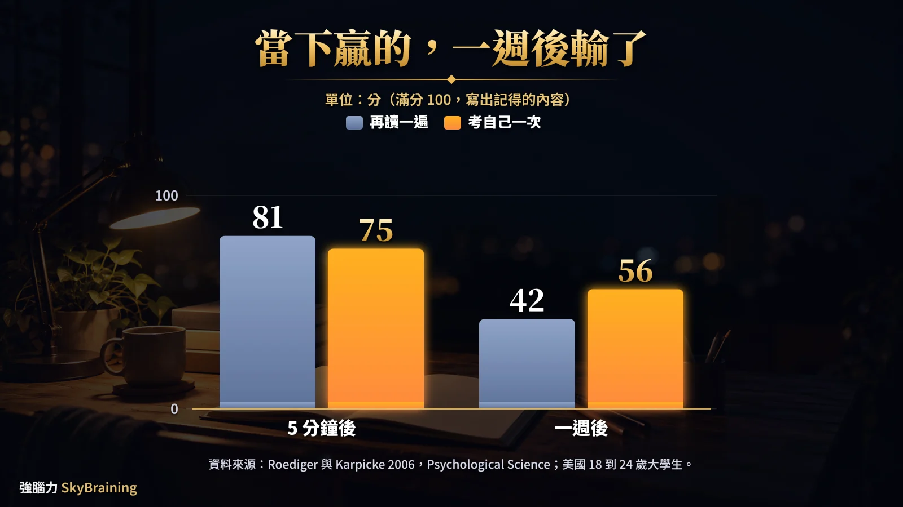
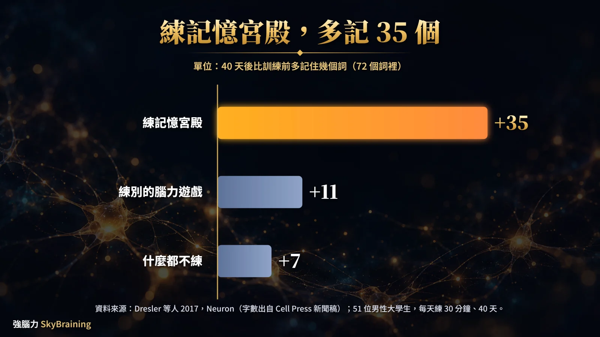

01記憶學是什麼？一句話：研究你怎麼記住、為什麼會忘
記憶學就是在問：你怎麼記住一件事，又為什麼會忘。
你看到「記憶學」，通常是兩個意思：
- 學術上的記憶研究：心理學和腦科學在查，資訊怎麼進腦、怎麼存、怎麼拿出來。
- 台灣常說的「記憶學」：把這些原理變成方法來練，像圖像記憶、記憶宮殿。
先懂記憶怎麼跑，你才知道力氣該花在哪。
02記憶怎麼運作？編碼、儲存、提取三個階段
你記住一樣東西，要過三關：編碼、儲存、提取。
用「你今晚背 10 個英文單字」走一遍：
- 編碼：看到 apple，腦子把它轉成存得進去的樣子；想像紅蘋果滾下桌，就多了一份畫面。
- 儲存：從眼睛看到的一瞬間，到腦中正在處理的幾個字，再到隔天還留著的。
- 提取：明天考試，你得自己把 apple 叫出來。
這個分站的想法，來自 Atkinson 與 Shiffrin（1968）的多重儲存模型：感官、短期、長期三站。Baddeley 與 Hitch（1974）細看短期那站，提出「工作記憶」：腦中暫放、正在處理資訊的地方。Paivio 的雙碼理論說，文字加圖像多一條路找回來；把字變成畫面，就是在編碼這關多做一步，看〈圖像記憶法是什麼？〉。
想記得牢，從進門那一關就要下功夫。
03你為什麼背了就忘？看遺忘曲線，再用提取練習拉回來
你背了就忘，多半是忘在剛背完的那一段。
先交代出處：艾賓浩斯 1885 年出書提出遺忘曲線，受試者只有他自己，背的是無意義音節。2015 年，Murre 與 Dros 照原方法重做，受試者也是 1 位成年人：
- 背完 20 分鐘回來重背，只省下 47% 的力氣。
- 1 天後，省下約 3 成（32%）。
- 2 天 23%、6 天 17%，越往後掉得越慢。
曲線的形狀，跟一百多年前那條幾乎一樣。想不起來，不等於全部不見：艾賓浩斯隔 31 天回來重背，還是省下約 2 成力氣。東西常常還在，只是你拿不出來。
那怎麼拿出來？練「提取」：闔上書，把它叫出來。
Roediger 與 Karpicke（2006），Psychological Science：120 位 18 到 24 歲的大學生讀英文托福閱讀短文，一篇再讀一次，一篇闔上書寫出記得的，再分批在 5 分鐘後、1 週後考。
再讀一次的那篇：5 分鐘後考 81%，1 週後考 42%
VS
考自己一次的那篇：5 分鐘後考 75%，1 週後考 56%
滿分 100 來看，1 週後再讀那篇 42 分、考自己那篇 56 分，差 14 分。

遺忘曲線的細節看〈遺忘曲線是什麼？〉，怎麼考自己看〈提取練習〉。
背完先別再讀一遍，闔上書考自己。
04記憶學、記憶術、記憶法、心智圖：四個詞一次分清楚
一句話幫你分：記憶學講為什麼，記憶術和記憶法講怎麼做，心智圖講怎麼整理。
| 名詞 | 是什麼 | 用來做什麼 | 例子 | 延伸閱讀 |
|---|---|---|---|---|
| 記憶學 | 研究記憶怎麼運作的學問 | 知道方法為什麼有用 | 三個階段、遺忘曲線 | 就是這一頁 |
| 記憶術 | 照記憶原理設計的技巧 | 背清單、順序、單字 | 記憶宮殿、圖像記憶 | 記憶宮殿是什麼、怎麼用？ |
| 記憶法 | 幫你記住、記久的做法都算 | 安排讀書和複習 | 考自己、間隔複習 | 記憶方法有哪些？ |
| 心智圖 | 整理和思考的工具，一課畫成一張圖 | 看懂架構、講得出來 | 一課一張、主幹 3 條 | 心智圖完整指南 |
心智圖畫完蓋起來講一遍，就變成在練提取。
先分清楚名字，你才知道自己要找的是哪一種。
05記憶學有哪些你用得上的方法？7 種，一張表
你用得上的常見 7 種：前 3 種下功夫在編碼，考自己練提取，接著 2 種管複習時機，心智圖管整理。
| 方法 | 一句做法 | 研究出處 |
|---|---|---|
| 圖像記憶 | 把字翻成會動的畫面 | Paivio 雙碼理論（經典理論） |
| 記憶宮殿 | 熟悉路線上一個位置掛一件事 | Dresler 等人（2017），成年人 |
| 聯想 | 幫新東西接上一個舊掛勾 | Cadavid 等人（2025），兒童與青少年；研究的是深度編碼，不是「聯想」這個名稱 |
| 考自己 | 闔上書叫出答案，再對答案 | Roediger 等人（2011），美國六年級社會科 |
| 間隔複習 | 在快忘的時候再拿出來 | Cepeda 等人（2008），1,350 多人的成人樣本 |
| 分散學習 | 同樣時間切成好幾天 | Sobel 等人（2011），加拿大五年級 |
| 心智圖 | 一課畫成一張圖 | Farrand、Hussain 與 Hennessy（2002），醫學系大學生 |
每一種怎麼做，看〈記憶方法有哪些？〉；複習隔幾天，看〈間隔複習怎麼做？〉。
方法不在多，挑 1 種練到順手。
06記憶力可以練嗎？研究說可以，靠的是方法加上練習
你的記憶力可以練，研究看到的是：學方法，再加上天天練。
先交代出處：Dresler 等人（2017），Neuron，找了 51 位沒學過記憶術的男大學生分 3 組：記憶宮殿、另一種腦力遊戲各每天練 30 分鐘、練 40 天，第 3 組不練。
練記憶宮殿那組：72 個詞，平均多記 35 個，到 62 個左右
VS
對照的兩組：練別種腦力遊戲的多記 11 個，什麼都不練的多記 7 個

4 個月後再測，練記憶宮殿那組還比訓練前多記 22 個以上。只上 2 天入門課、沒接著練的另一組，腦網路沒有同樣變化；作者說效果來自密集練習，不是聽過原理就有。這些是平均，每個人練的結果不同。
那你家孩子呢？Cadavid 等人（2025），European Journal of Psychology of Education，整理 75 篇兒童與青少年的記憶實驗，摘要寫間隔、提取練習、深度編碼這三類「對兒童與青少年都有益處，不分年齡」；記憶宮殿和心智圖不在這 75 篇裡。
其實你不是記性差，只是沒學過記憶的方法。
07你要學記憶學，還是學記憶方法？先懂原理，再練方法
你兩個都要，但順序是：原理看懂就好，力氣花在練方法。
- 原理告訴你為什麼要考自己、要隔幾天再看。
- 方法讓你做得到：把字變成畫面、放進記憶宮殿、照遺忘曲線排複習。
我的經驗是，自己練常常停在「看懂了」。你想有人帶：線上看〈記憶力課程《過目不忘》〉；住高雄看〈高雄記憶力課程〉；想先試，上免費體驗課「10 倍聯想力」，我示範把字變成畫面。
08你可能想問
記憶學是什麼？
記憶學研究你怎麼記住、為什麼會忘，核心是編碼、儲存、提取三個階段。你在台灣看到的「記憶學課程」，多半是把這些原理變成記憶方法來練，例如圖像記憶和記憶宮殿。
記憶學和記憶術差在哪？
記憶學講「為什麼」，記憶術講「怎麼做」。記憶學告訴你大腦怎麼存資料；記憶術，像記憶宮殿，是照這些原理設計的技巧。你想背得起來，靠記憶術；你想知道它為什麼有用，看記憶學。
記憶學有科學根據嗎？
有。編碼、儲存、提取是認知心理學的基本架構，遺忘曲線在 1885 年就有實驗發表，提取練習和間隔複習也有很多研究。不過研究講的多半是平均效果，你的結果會因練習方式和時間不同。
記憶學可以自學嗎？
原理可以自學，這一頁和延伸文章就夠你入門。難的是把方法練成習慣，自己練很容易停在「看懂了」。你想有人帶，可以先上免費體驗課「10 倍聯想力」。
記憶學課程在學什麼？幾歲可以學？
強腦力的記憶力課程《過目不忘》教圖像記憶、記憶宮殿和間隔複習，適合 10 歲以上到 35 歲，線上全台可學；你住高雄，也可以看高雄實體班。
記憶主題文章，你可以接著讀：
- Ebbinghaus, H. (1885). Über das Gedächtnis（受試者為作者本人，材料是無意義音節）https://psychclassics.yorku.ca/Ebbinghaus/index.htm（英譯本）
- Murre, J. M. J., & Dros, J. (2015). Replication and Analysis of Ebbinghaus' Forgetting Curve. PLOS ONE, 10(7), e0120644. https://doi.org/10.1371/journal.pone.0120644；PMC 全文：https://pmc.ncbi.nlm.nih.gov/articles/PMC4492928/
- Roediger, H. L., III, & Karpicke, J. D. (2006). Test-enhanced learning: Taking memory tests improves long-term retention. Psychological Science, 17(3), 249–255. https://doi.org/10.1111/j.1467-9280.2006.01693.x
- Dresler, M., Shirer, W. R., Konrad, B. N., Müller, N. C. J., Wagner, I. C., Fernández, G., Czisch, M., & Greicius, M. D. (2017). Mnemonic Training Reshapes Brain Networks to Support Superior Memory. Neuron, 93(5), 1227–1235.e6. https://doi.org/10.1016/j.neuron.2017.02.003；PMC 作者手稿：https://pmc.ncbi.nlm.nih.gov/articles/PMC5439266/（正文 35、11、7、22、62 出自 Cell Press 2017-03-08 新聞稿：https://www.sciencedaily.com/releases/2017/03/170308131236.htm）
- Cadavid, S., Cortés-Albornoz, M. C., Gómez-Carvajal, A.-M., Mendoza-Ayús, S. D., Luna, K., Olaya Galindo, M. D., Vélez-Van-Meerbeke, A., & Talero-Gutiérrez, C. (2025). Learning techniques to improve memory in children: a systematic review. European Journal of Psychology of Education, 40, Article 38. https://doi.org/10.1007/s10212-024-00936-0
- Roediger, H. L., Agarwal, P. K., McDaniel, M. A., & McDermott, K. B. (2011). Test-enhanced learning in the classroom: Long-term improvements from quizzing. Journal of Experimental Psychology: Applied, 17(4), 382–395. https://doi.org/10.1037/a0026252
- Cepeda, N. J., Vul, E., Rohrer, D., Wixted, J. T., & Pashler, H. (2008). Spacing effects in learning: A temporal ridgeline of optimal retention. Psychological Science, 19, 1095–1102. https://doi.org/10.1111/j.1467-9280.2008.02209.x
- Sobel, H. S., Cepeda, N. J., & Kapler, I. V. (2011). Spacing effects in real-world classroom vocabulary learning. Applied Cognitive Psychology, 25(5), 763–767. https://doi.org/10.1002/acp.1747
- Farrand, P., Hussain, F., & Hennessy, E. (2002). The efficacy of the 'mind map' study technique. Medical Education, 36(5), 426–431. https://doi.org/10.1046/j.1365-2923.2002.01205.x
- Paivio, A. (1971/1986). Imagery and Verbal Processes / Mental Representations: A Dual Coding Approach. — 雙碼理論。
- Atkinson, R. C., & Shiffrin, R. M. (1968). 多重儲存模型。
- Baddeley, A. D., & Hitch, G. (1974). 工作記憶模型。